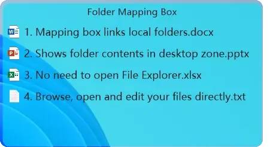

Looking for a Fences alternative? Six things worth checking before you switch
Moving your desktop to a new organizer is close to a one-way door: your icons go into the new tool, and moving them back out is tedious. So check a few things first. Below are the six questions that decide whether you will still be happy in six months, each with our own answer beside it and a way to test any candidate you are considering — this one included.
Is it one payment, or a subscription in disguise?
Ours: US$14.99 during the launch period, US$19.99 afterwards, paid once. Every 1.x update is included in that price — no renewal, no upgrade fee inside the version line, and no charge per device.
How to check: open the candidate’s pricing page and search for the word “updates”. Then find the sentence that says where those updates stop being free. If there is no such sentence, ask.
Does the desktop stay clear after you press Win+D?
Ours: yes. Boxes are their own windows rather than icons sitting on the desktop surface, so the Show Desktop shortcut neither folds them into one frame nor shuffles them. Press it as often as you like — your layout is exactly where you left it.
How to check: press Win+D twice, then look at the position and order of everything. If items come back merged into a single window, or in a different arrangement, that tool is not immune.
How much of the desktop is left when you are done?
Ours: an empty one. Your files go into boxes, the boxes step out of the way when you are not using them, and what you look at all day is your wallpaper — not a wall of icons. Most tools make a cluttered desktop tidier; the goal here is a desktop with nothing on it.
How to check: screenshot your desktop today, use the candidate for a week, then screenshot it again. Compare how many icons are visible, not how neatly they are arranged. Those are two different products.
Does it need an account or a connection?
Ours: no account, no sign-in, no cloud folder. Activation is verified on your own machine, so nothing breaks when our site is down or you are on a plane. The app never uploads your files, your filenames or your usage anywhere.
How to check: turn off Wi-Fi, then restart the candidate. If it asks you to sign in again, or refuses to start, you have your answer.
What happens to your wallpaper?
Ours: a box can carry its own background image, and your system wallpaper is put back the moment the box steps aside. You are never left wondering which wallpaper Windows thinks it is using.
How to check: set a distinctive wallpaper, then open and close a box a few times. If the wallpaper is gone afterwards, you will be resetting it by hand from now on.
What happens after you pay?
Ours: 30 days to change your mind, no reason required. And if the app turns out to be genuinely broken and we cannot fix it, the refund stands however long ago you bought it. Moving to a new PC is covered by free re-signing: once per 12 months, up to three times, within 36 months of purchase.
How to check: ask the maker in writing, before you pay: how long is the refund window, and what happens if I change my computer? A one-line answer is a good sign. Silence is the answer too.
The end state: a desktop with nothing on it
Tidier icons are not the same as a clear desktop. This is what is actually left when everything is put away.

Questions people ask before buying
Short answers. The long ones are on the Terms of Sale page.
- Is there a free version?
- Yes. There is a 15-day trial with every feature unlocked, no account and no card. When it ends, the basic organizing keeps working for free, and only the advanced and PRO features lock. Buying a licence at any point picks up exactly where the trial left off.
- How does the licence work?
- Checkout asks for a Machine Code: 16 hexadecimal characters from Settings → PRO Features → Copy machine code. An activation code is signed for that machine and emailed to you, within 24 hours and usually much sooner. The code is verified offline, so it keeps working without a connection.
- What happens if I reinstall Windows or change my PC?
- Reinstalling Windows does not change your Machine Code, because it is derived from the system disk serial and the CPU model — neither of which a reinstall touches. Replacing the disk or the CPU does change it. Re-signing is free: once per 12 months, up to three times in total, within 36 months of purchase.
- How big is the download?
- About 4 MB, as a single portable executable. There is no installer, no admin rights required and no background service. Delete the folder and the app is gone.
- Does it need an account or an internet connection?
- No account. Downloading needs a connection, but after that the app runs entirely offline, and activation is verified locally on your own machine.
- What is the refund policy?
- 30 days, any reason, no questions asked. If the app turns out to be broken and we cannot fix it, the refund stands no matter how long ago you bought it. Full wording is on the Terms of Sale page.
30-day money-back guarantee · every 1.x update included · Windows 10 and 11
Fences® is a trademark of Stardock Systems, Inc. QiaoDesktop is not affiliated with, sponsored by, or endorsed by Stardock. This page describes QiaoDesktop only and makes no claim about any other product; the checklist above is offered for you to apply to whichever tools you are comparing.